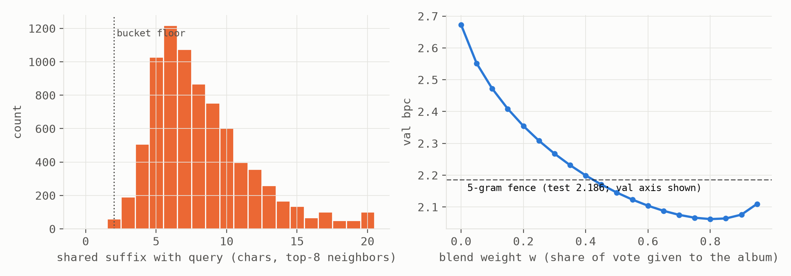
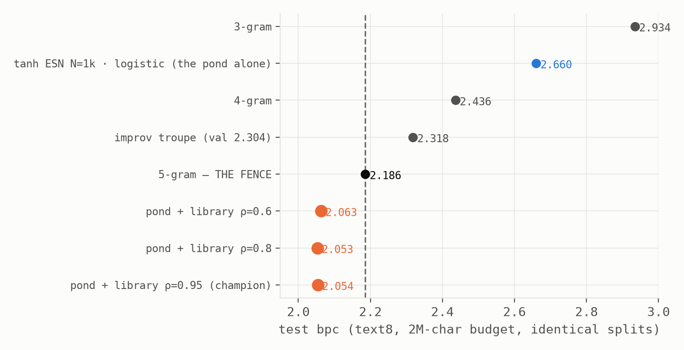

cd ~/experiments/echo-library && less note.txt
The Pond That Remembered Everything
Retrieval as the fourth reader: a training-free episodic memory breaks the fence no architecture in this program had beaten
Abstract. We give a small random reservoir an episodic memory: every state it visits while reading the training corpus is stored with the character that came next (~2×10⁶ entries, 8 GB, zero training), and at inference the current state retrieves its nearest stored states and lets them vote, blended with the pond's own logistic readout. The index is the geometry the companion notes measured: reservoir states form a near-exact suffix tree, so nearest-in-state means longest-shared-suffix: retrieved neighbors share a mean 8.2 characters of history with their query (registered gate: ≥4), making the library an adaptive-depth context model with no fixed order. Results, all pre-registered. (1) The fence falls: pond + library reaches 2.013 validation / 2.054 test bpc against the 5-gram's 2.159/2.186 on identical splits, the first architecture in this program to beat that baseline, at every spectral radius tested, with the album carrying 75–80% of the probability mass. It simultaneously overtakes every reservoir in both companion programs, including one with fifty times the units and 1.35M trained parameters. (2) Retrieval is nearly tax-free: where ridge, logistic, and sparse readers all price held memory (the companion law), the library's performance varies by 0.014 bpc across the whole ρ range, with a slight preference for deeper states, inverting the registered direction: depth sharpens addresses and nothing has to pay to decode it. (3) The claim is mechanistic, not novelty: adaptive-order context modeling has beaten fixed n-grams since PPM (1984). The news is that a random, untrained dynamical system's state geometry implements it for free, and that storage separated from state, the transformer's deepest architectural move, works even when everything else is a puddle of random numbers.
§1 The machine
The pond is the program's standard tanh reservoir (N = 1000, leak 1, 2×10⁶ training characters, pond-lab splits). Reading the training stream once produces the library: every post-washout state x_t paired with the character that followed. At inference, the query state retrieves its top-64 stored neighbors and they vote:
p(c) = (1−w) · p_logistic(c | x) + w · Σ_neighbors softmax(−d/σ) · 1[next = c]
(σ, w) are tuned on validation only, the sole tuning in the system. The index design is stolen from the companion notes' own measurement: the state cloud's dendrogram splits first on the last character, then the one before, so the library is filed in 729 drawers by the last two context characters and searched exactly within a drawer, on 64-dimensional PCA projections. Search over two million entries costs about two minutes for half a million queries, in NumPy, on the CPU.
§2 The gate: the tree really is the index
The registered gate asked whether retrieved neighbors share at least 4 characters of trailing context with their query (the drawer alone guarantees ~2). Measured: a mean of 8.2, stable across ρ, with a tail past 20 (Fig. 1, left). Nearest-in-state is longest-suffix-match, as the suffix-tree geometry promised; the library behaves as a ~9-gram whose order flexes per query: ordinary moments match a few characters deep, rare phrases match as far as the corpus has ever seen them. The blend curve (Fig. 1, right) shows the division of labor: bpc falls monotonically as the album's share of the vote rises, crossing the 5-gram fence near w ≈ 0.45 and bottoming at w ≈ 0.8, where the parametric readout is reduced to a smoothing prior for moments the album has never seen.

§3 The fence falls
The 5-gram baseline (2.159 validation / 2.186 test at this budget) had survived every architecture in both programs: every reservoir at every size, the tropical pond, the funhouse, the troupe, the champion 50,000-unit network with 1.35 million trained parameters. The pond with a library clears it at every spectral radius tested (Fig. 2): the validation-chosen cell scores 2.013 val / 2.054 test, a 0.13-bit break of the fence and the new program champion, from a thousand-unit pond, a 27,000-parameter readout, and an album whose construction is a single forward pass.

| seed | val bpc | test bpc |
|---|---|---|
| 0 | 2.0131 | 2.0537 |
| 1 | 2.0173 | 2.0581 |
| 2 | 2.0173 | 2.0563 |
§4 The fourth reader, and what it refuses to pay
The companion law prices held memory through the reader: ridge pays calibration plus interference, logistic pays what its optimizer can't reach, selection starves on distributed codes. Retrieval completes the taxonomy, and its price list is nearly empty: across ρ ∈ {0.6, 0.8, 0.95} the library's bpc spans 0.014, against the 0.4-bit swings the same dial produces under parametric readouts. The registered prediction (the optimum retreats to shallow ρ once the album carries the memory) was falsified in the informative direction: the optimum drifted deeper, because depth sharpens the address (more past in the state means finer suffix discrimination in the metric), and no readout ever has to decode that past, so the usual interference bill never arrives. Memory you navigate by costs almost nothing; memory you must linearly decode costs everything. That is this program's oldest thesis (the first note's frozen-transformer finding was that attention retrieves the past without storing it in a crowded state), now demonstrated constructively, with a filing cabinet standing in for attention and zero gradients standing in for pretraining.
§5 Honesty, limits, and related work
Full disclosure ledger. The first sweep shipped a numerics bug (unclamped square root of a float-cancellation-negative distance → σ = NaN → every vote zeroed), which the validation tuner correctly answered by switching the library off; the gate-vs-blend disagreement exposed it, the broken JSONs are quarantined in the repository, and every number above is from the fixed rerun. The third registered prediction (the album earns most on rare contexts) is UNRESOLVED: the shipped instrument binned by target-included trigram frequency, target rarity rather than context rarity as registered, and under that (wrong) binning pure-kNN loses on rare targets through vote sparsity, which is precisely why the blend retains a parametric floor. A corrected instrument is queued. Scope: one corpus, 2×10⁶-character library, N = 1000, character level; the library memorizes the same training data the n-grams count, so the comparison is data-matched by construction; three seeds on the champion cell (Table 1), single seeds elsewhere.
Related work. Nearest-neighbor language models over learned representations: Khandelwal et al. (kNN-LM), the direct modern relative; here the encoder is random and untrained, and the finding is that suffix-tree geometry alone suffices. Adaptive-order context modeling: PPM (Cleary & Witten, 1984) and context-tree weighting, the classical family this machine implements geometrically; beating fixed n-grams is their legacy, not our news. Fractal prediction machines (Tiňo et al.) supply the theory of why reservoir states encode suffixes; the companion notes supply the measurements this index is built on. Complementary learning systems (McClelland et al.) is the cognitive frame: a slow parametric learner plus a fast episodic store, here with the episodic store doing four-fifths of the talking.